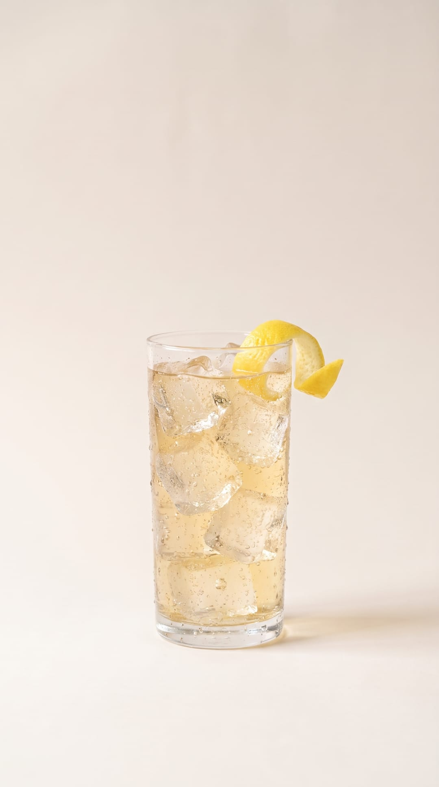
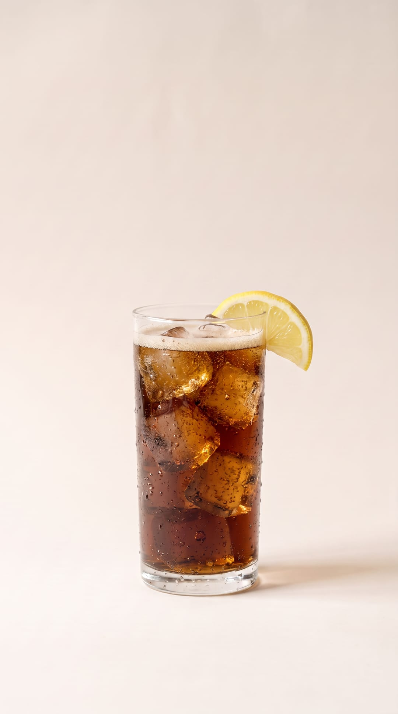
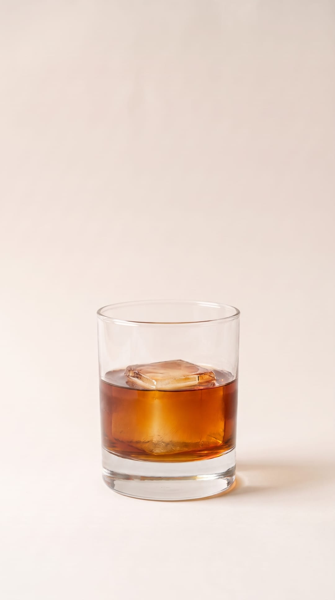

Tonight · 오늘의 한 잔
오늘 저녁엔,
무엇을
섞을까요

가진 위스키와 냉장고 속 음료로, 비율만 따라 하면 되는 한 잔.
레시피 보기
레시피 보기
Golden recipe · 황금레시피
사람들이 가장
많이 섞은 조합
- 01위스키 하이볼짐빔 화이트 + 탄산수1:3
- 02얼그레이 하이볼가쿠빈 + 탄산수 + 시럽1:4
- 03가쿠 하이볼산토리 가쿠빈 + 탄산수1:4
- 07잭콕잭 다니엘 + 콜라1:3

Popular · 많이 만드는 레시피
붓기만 하면 되는
섞어 마시기
- 하이볼위스키 · 탄산수1:3
- 레몬 하이볼위스키 · 탄산수 · 레몬즙1:3
- 위스키 콜라위스키 · 콜라1:3
- 진저 하이볼위스키 · 진저에일1:3
— 03
Real bottles · 실제 제품
후기 많은 위스키로
만드는 한 잔
 페이머스 그라우스★ 4.7 · 후기 3,025 · 2~5만원 → 하이볼
페이머스 그라우스★ 4.7 · 후기 3,025 · 2~5만원 → 하이볼 탐나불린 셰리 캐스크★ 4.7 · 후기 2,382 · 5~10만원 → 하이볼
탐나불린 셰리 캐스크★ 4.7 · 후기 2,382 · 5~10만원 → 하이볼 커티삭 오리지널★ 4.6 · 후기 2,077 · 2~5만원 → 갓파더
커티삭 오리지널★ 4.6 · 후기 2,077 · 2~5만원 → 갓파더
